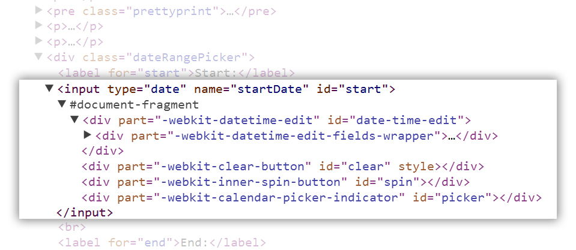

Browser On Steroids
Taking Web Apps To The Next Level
Cutting Edge 2014
$> whoami
- I am Amey Sakhadeo
- Work on Java, Javascript and GWT for the Data Insight team
- Contribute to jQuery in my free time
- @ameyms on Twitter
- Homepage: http://ameyms.com
#ce2014 #html5
Wachu talkin' 'bout
- HTML5 APIs and Features
- Briefly Touch base on CSS3
- Bleeding edge browser technology
- No demos
- No code snippets
*This is you after this talk
Storing & Accessing Local Data
Cookies are not for caching data.
HTML5 LocalStorage is...
persistent
a string to string map
synchronous
HTML5 IndexedDB is...
persistent
NoSQL
async
permission based
HTML5 FileSystem is...
permission based
sandboxed
synchronous or async
quota based
Staying Connected
Communicating with server
Requiring user to refresh is BAD
Constantly polling through timers is BAD
Having stale data on GUI is WORSE
WebSockets
are full duplex
work over TCP port 80
encrypted or unencrypted
Staying Connected: Part Deux
Talking to peers
WebRTC
peer-to-peer communication
binary data or plain text
reliable or unreliable delivery
security is built in (DTLS, SRTP)
Making The Web Dance.

SVG
draw vector shapes
lines, curves, rectangles, circles
translation and scaling
datainsight the social network map demo!
Canvas
mspaint for the web
no additional dom objects
datainsight performance charts
CSS3 Animations
animations on separate thread
hardware acceleration
*this* presentation uses it!
Animation Frame
animations on separate thread
pause animations when not required
save CPU and battery!
WebGL
opengl for the web
complex 3D rendering
games, CAD apps
three.js
Shadow DOM
& Web Components & HTML Imports
To build something so simple...

This is how it should be.
Home
About
Contact
<my-tree root="/foo/bar/baz" />
..looks like this under the hood

HTML Imports allow you to package your components
★★★★★
" Shadow DOM is encapsulation for the Web."
★★★★★
" HTML Imports are the #include of the Web."
Interested in more?
polymer-project.org
Questions?
Use the mic, Luke
May The Source Be With You!